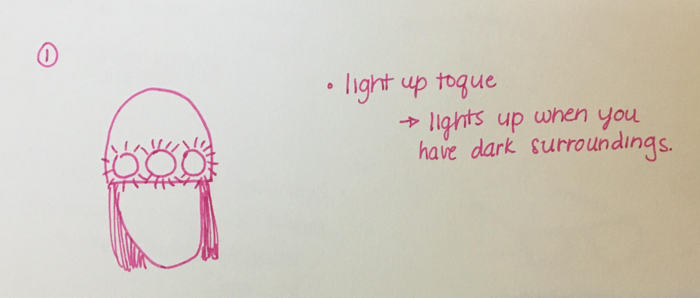
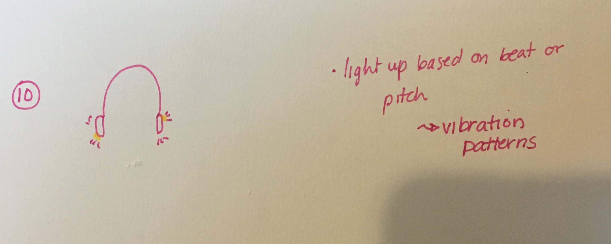
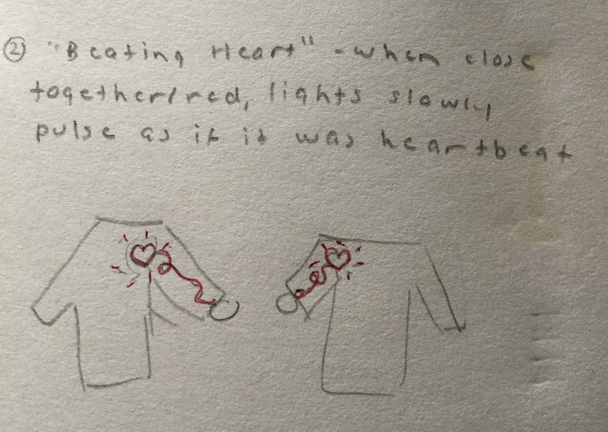
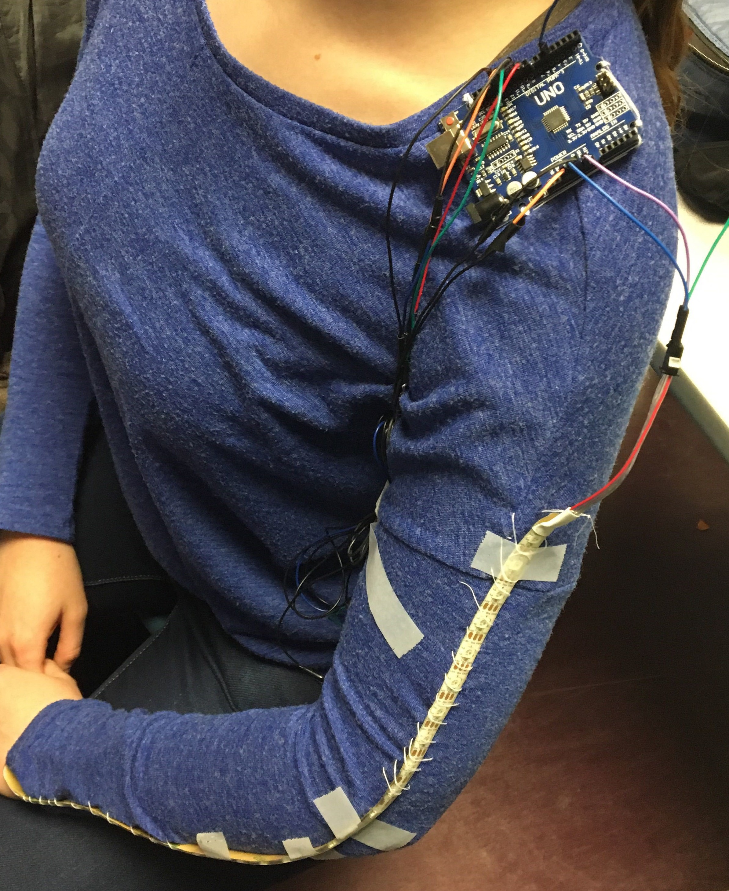

The goal of this project was to combine fashion and technology. We were to use at least one input device and one output device in our design.
When introduced to this project, my ideas initially circled around what we could possibly create that was both aesthetically pleasing and had a purpose.
I tried to think of some ideas which could be used for pets and their accessories - I was hoping to stray from the norm of jewellery and clothing.
I had a difficult time with this as pets do not really have too many accessories aside from collars and leashes, thus, many of my ideas circled back to human
needs. Nonetheless, I did my best to stray away from common ideas and tried to think outside of the box to shows, headphones, and jewellery rather than just clothing.


Some of the design feedback we received includes the following:
Sorting hat idea would be cooler if you included sound effects for the different possible sortings
Notification shirt is cool and artsy, could add different colours to differentiate between the type of notification received
String idea is cool (between two shirts)
Hype shirt is practical and probably marketable because it is very customizable
Pirate hate is a good symbol, can be used as a sort of community hub to bring people together, think about having a charging port or something to give it more functionality
Cat collar would be a useful thing to have
Could combine the jellyfish and aquarium dresses to one, this would be very interesting
Refined Sketches:
We chose to go with Andrea's "Two Strings of Love" idea. We all agreed this was a unique and cute idea to implement.
This also allowed us to possibly expand our idea by using multiple sensors for different purposes, as well as using input and output sensors which we had not yet
experimented with. Below are our refined sketches:
Sabrina's sketch
Sabrina's sketch
Sabrina's sketch
Sabrina's sketch
Andrea's sketch

Andrea's sketch
Grace's sketch - focus on placement of lights
Grace's sketch - focus on drawing a heart from individual LEDs
Rhys's sketch
Rhys's sketch
We chose to build our project of of the third and fifth refined sketches. Our main focus was on using the pattern of the lights in the LED strip to tell a story of two individuals.
When they are far apart, the LED strip is in its resting state - a pulsing state, as though it is searching for its other half. When it is in close proximity to the other individual - when they are touching or holding hands,
the LED strip moves to an excited state where the lights change colours and pulse to the beat of a heart.
An RFID sensor is used to determine when the two individuals wearing these tops are near one another.
We chose to place the sensors on the inside of the wrist so that the two shirts would synchronize and light up when the two individuals hold hands.
The resting state is characterized by a dim red light which travels up and down the LED strip, searching for its other half. The excited
state is opposingly characterized by a bright pink, purple, and red light which pulses quickly to the beat of a heart - the pulse travels from the top of the sleeve to the bottom.
The above design choices were made in an attempt to tell a story through the lights. There is a noticable visual difference between the two states, and this
emphasizes the story told in the "Two Strings of Love" proverb. This visual difference can also be seen in the videos included below.
We also chose to have two tops per individual for the purposes of creating an aesthetically pleasing design. The LED strips are sewn onto the
outer side of the sleeve, the arduino is attached on the shoulder, the battery pack is either placed on the individual's side or in their back pocket, and the
sensors are attached on the inner side of the sleeve on the wrist. Below find an image of the wiring and placement of parts on the undershirt.

Some additional considerations which were made in the process were: no hearts because of lacking hardware, kept overshirts simple to maintain the story and keep the focus on the
changing state of the lights.
In the process of designing and implementing our fashion tech idea, we were somewhat limited resource-wise with what was available and this impacted our final design.
Initially, we were hoping to have the LED strip wrap around the sleeve and then draw a heart on the chest, however, since we had to use shorter LED strips because that is all that was available to us,
we were unable to draw the heart on the chest - instead we just have a strip of lights travelling up the side of the sleeve. We did consider drawing a heart out of individual LEDs, as is seen in some refined sketches,
however, this would have contradicted the story behind our design to some extent so we decided to leave this out - if we made a heart out of individual LEDs, because they would not be connected
to the arduino and LED strip/RFID sensors, they would not light up with the change of state in the LED strip. They would have to either be consistently lit up or not, and this did not go with the story
behind the design of changing states based on distance from the other.